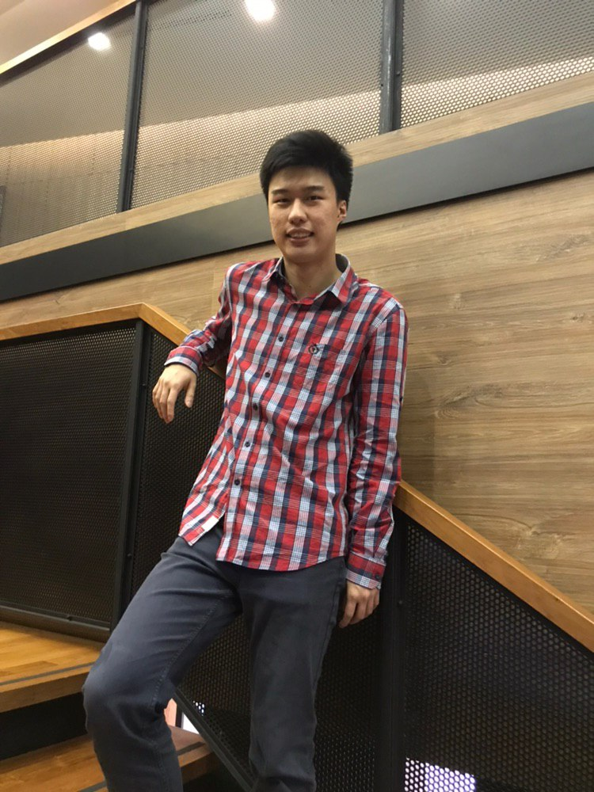

About me
Hello World...
I'm a 3rd year Computer Engineering student at Nanyang Technological University (NTU) and I'm currently pursuing a minor in Mathematics (Statistics). I'm interested in the field of Machine Learning, Deep Learning, Artificial Intelligence and Software Engineering.
Throughout my 3 years of experience in programming, I developed a strong passion in Natural Language Processing (NLP), which is one of the many fields in AI. I'm always curious about how NLP can be applied to our everyday life which includes, text to speech, text prediction, language translation and many more. I believe that one day, I will harness the knowledge of NLP and apply it into the real world context to serve my community better.
Currently, I'm spending my free time on the other aspects of computing, such as learning and deploying web applications by taking online courses and doing some self-research from textbooks and research papers.
I love to tackle challenging problems even though the process may be tough at times. I believe that having challenges along the way gives me valuable experiences, which cannot be obtained from theory or conventional classes. I'm also eager to learn new skills and I believe that learning never stops even when I've graduated from university.
{kind=link}
{kind=link}
{kind=link}